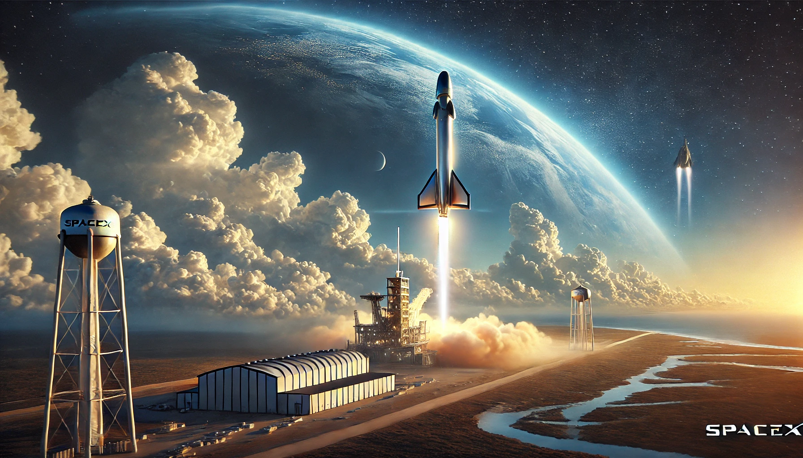
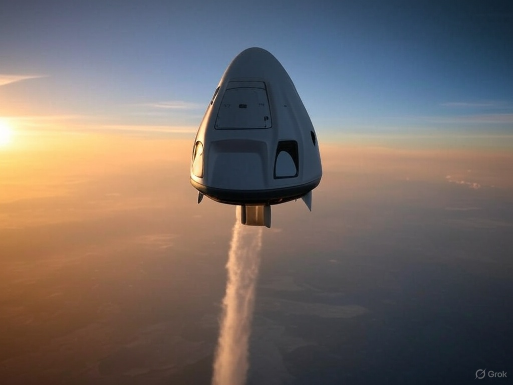
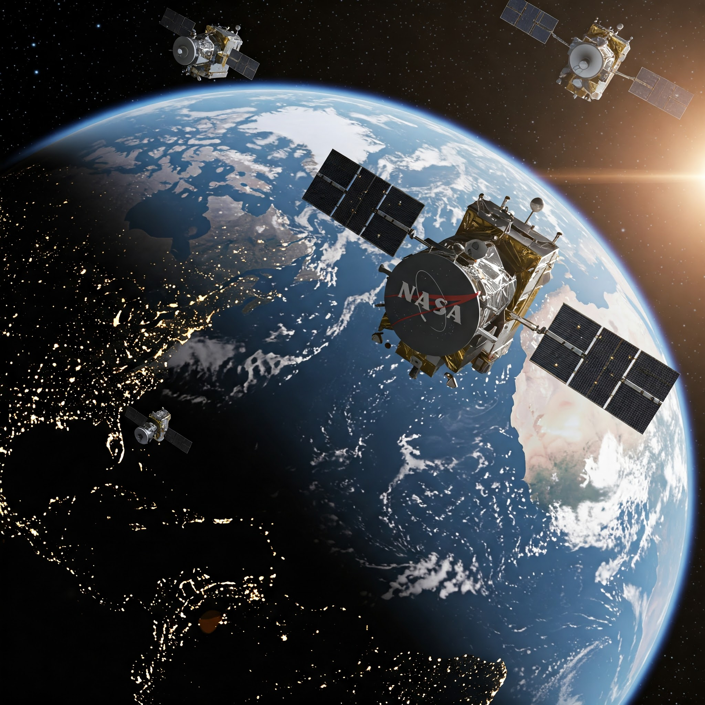
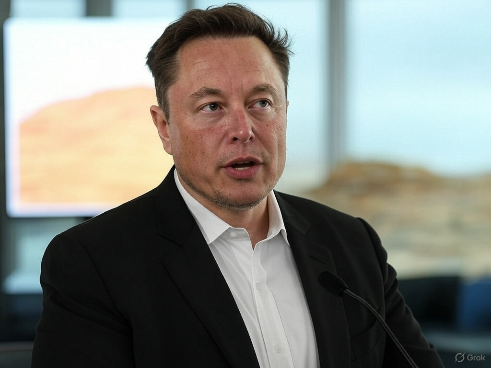

Starship
SpaceX hoàn thành thành công nhiệm vụ bay thử nghiệm thứ 5 của Starship
Tên lửa Starship của SpaceX đã đạt được cột mốc quan trọng khi hoàn thành nhiệm vụ bay thử nghiệm với việc hạ cánh và thu hồi cả hai giai đoạn.

Nhiệm Vụ
Tàu Dragon của SpaceX đưa phi hành gia trở về Trái Đất an toàn sau 6 tháng trên ISS
Phi hành đoàn gồm 4 người đã hạ cánh thành công ngoài khơi bờ biển Florida sau nhiệm vụ kéo dài 180 ngày trên Trạm Vũ trụ Quốc tế.
Công Nghệ
SpaceX triển khai thêm 60 vệ tinh Starlink, mở rộng mạng lưới internet vệ tinh toàn cầu
Dịch vụ Starlink đã đạt mốc 2 triệu người dùng trên toàn thế giới, tiếp tục mở rộng vùng phủ sóng tại các khu vực khó tiếp cận.

Kinh Doanh
SpaceX giành hợp đồng phóng vệ tinh trị giá 5 tỷ USD từ NASA cho nhiệm vụ khoa học mới
Hợp đồng mới khẳng định vị thế của SpaceX trong lĩnh vực phóng vệ tinh thương mại và cạnh tranh với các đối thủ lớn.

Thám Hiểm
Elon Musk chia sẻ lộ trình mới cho kế hoạch đưa con người lên sao Hỏa vào năm 2029
Dự án tham vọng của SpaceX hướng tới việc thiết lập một thuộc địa người trên sao Hỏa đang đi đúng lộ trình với các thử nghiệm Starship.